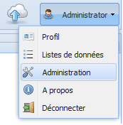
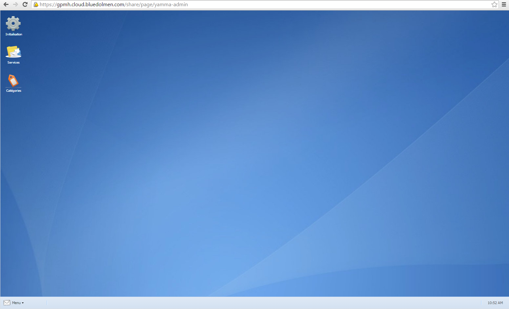
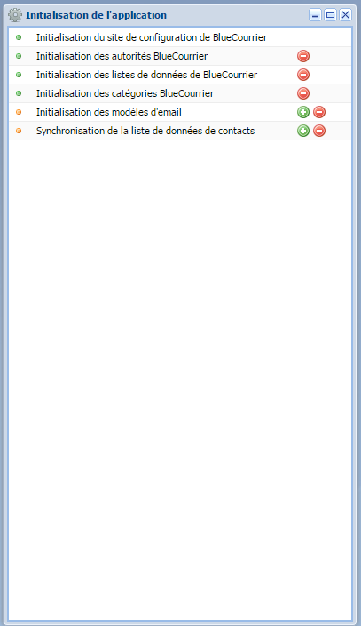
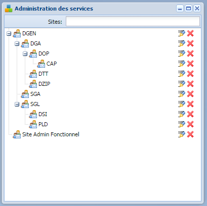
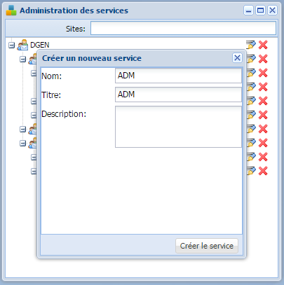
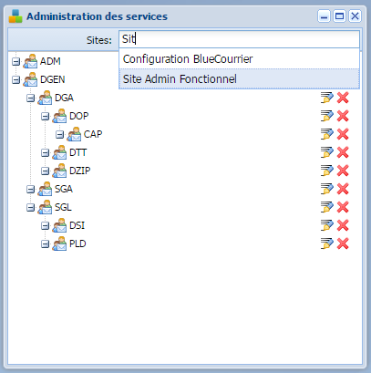
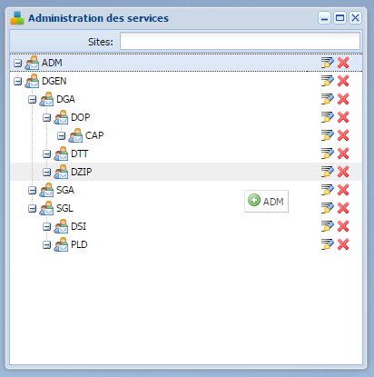
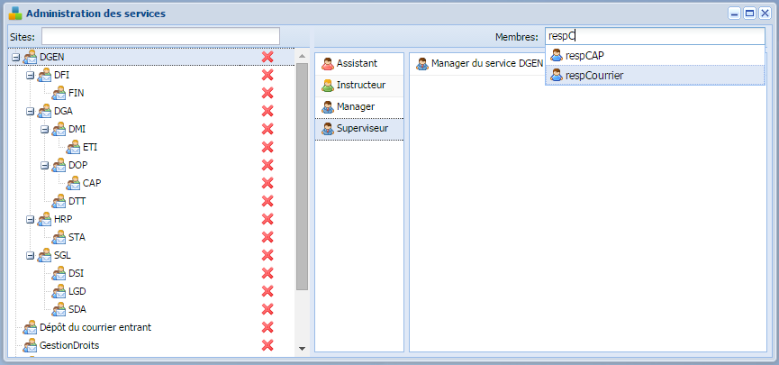
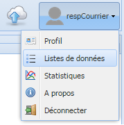
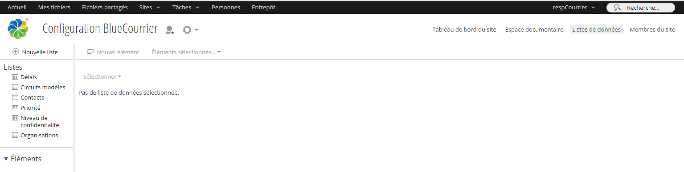

Manuel d'administration¶
Introduction¶
L'administration de Blue Courrier se fait via la page d'administration permettant :
-
d'initialiser Blue Courrier,
-
de gérer les services où la gestion de courrier doit être activée,
-
de gérer les catégories utilisées pour définir les typologies de document.
Les membres du groupe BLUECOURRIER_ADMINISTRATORS et l'administrateur Alfresco ont accès au site d'administration de Blue Courrier.
Accès au site d'administration de Blue Courrier¶
L'accès à la page d'administration se fait en suivant les étapes ci-dessous :
-
Lancez Blue Courrier ;
-
Cliquez sur votre profil, en haut à droite. Un menu apparaît :

- Cliquez sur 'Administration'. Vous êtes redirigé sur la page http://{SERVEUR}/share/page/yamma-admin :

Les fonctions d'initialisation sont accessibles à l'adresse suivante :
- http://{SERVEUR}/share/page/yamma-admin
Initialisation¶

En cliquant sur le bouton vert (+) à côté de chaque étape d'initialisation, l'étape correspondante est activée. L'initialisation de Blue Courrier doit toujours être réalisée dans le même ordre, de l'initialisation du site de configuration à la synchronisation de la liste de données de contacts.
Initialisation du site de configuration de Blue Courrier¶
Un site "Configuration Blue Courrier" est créé pour stocker toute la configuration nécessaire à Blue Courrier.
Initialisation des autorités BlueCourrier¶
Création des autorités nécessaires au fonctionnement de Blue Courrier.
Initialisation des listes de données de Blue Courrier¶
Les listes de données suivantes sont créées :
- liste des délais ;
- liste des circuits modèles ;
- liste des contacts ;
- liste des priorités ;
- liste des niveaux de confidentialité ;
- liste des organisations.
En cliquant sur le bouton vert (+), les listes de données ci-dessus sont créées dans le site "Configuration Blue Courrier".
Vous pouvez par la suite ajouter des éléments supplémentaires en modifiant la liste adéquate.
Initialisation des catégories¶
Création des catégories racines nécessaires à Blue Courrier.
Initialisation des modèles d'e-mail¶
Les modèles de mél utilisés pour les notifications, par exemple pour accuser réception d'un courrier, sont créés. Cette notification est actuellement désactivée.
Synchronisation de la liste de données de contacts¶
Gestion de l'organigramme¶
Gestion des services¶
Nous préconisons de représenter un service organisationnel (un pôle, une direction ou un service) par un site Alfresco Share. Ce service peut être intégré dans la gestion de courrier mais pas obligatoirement.
Vous pouvez, via la page d'administration des services :
- Créer des services ;
- Ajouter un service existant à la gestion de courrier ;
- Supprimer un service existant de la gestion de courrier ;
- Hiérarchiser des sites et recréer ainsi l'organigramme de votre structure.
Pour supprimer définitivement un site ou un courrier, il faut passer par l'interface Share.
Créer des services¶
- Accédez à l'écran d'administration
- Cliquez sur l'icône 'Services'. La fenêtre suivante apparaît :

- Saisissez dans le champ 'Sites' le nom du service que vous voulez créer
- Appuyer sur la touche 'Enter'
Si le site n'existe pas, le formulaire suivant apparaît :

- Saisissez le nom du service. Ce nom ne peut contenir que des lettres, des chiffres et le signe souligné '_'. Ce nom est 'technique' et n'est pas destiné l'utilisateur ;
- Saisissez le titre du service. C'est le titre que l'utilisateur voir généralement. Il est donc important que ce titre reflète la réalité de l'organisation de l'utilisateur ;
- Cliquez sur 'Créer le service'.
Le service apparaît alors dans la fenêtre précédente.
Ajouter un service existant à la gestion de courrier¶
- Accédez à l'écran d'administration ;
- Cliquez sur l'icône 'Services' ;
- Saisissez dans le champ 'Sites' le nom du service que vous voulez ajouter. Ce service est normalement déjà existant. Après avoir tapé les 3 premières lettres, la liste des services correspondants existants apparaît :

- Sélectionnez le service adéquat ;
- Validez la sélection du service en cliquant sur 'Oui' ;
Le service est maintenant un site de gestion de courrier.
Supprimer un service existant de la gestion de courrier¶
- Accédez à l'écran d'administration ;
- Cliquez sur l'icône 'Services' ;
- Cliquez sur l'icône représentée par une croix rouge.
Le site correspondant n'est plus géré par le service de gestion de courrier, il ne sera plus disponible pour les fonctionnalités d'assignation de services.
Il est toujours possible de retransformer un site Alfresco en service. Après avoir supprimé un service, il est possible de supprimer définitivement le site.
*Recherchez le site dans Alfresco ; * Cliquez sur 'Supprimer'.
Hiérarchie des sites¶
- Accédez à l'écran d'administration ;
- Cliquez sur l'icône 'Services' ;
- Cliquez sur le service que vous souhaitez déplacer ;
- Glissez le service. Une icône représentant le signe + apparaît :

- Déplacez le service dans le service parent
Le service est alors sous le service parent.
Ajouter des utilisateurs à un service¶
Les membres du groupe BLUECOURRIER_ADMINISTRATORS ont accès à la gestion des groupes utilisateurs depuis la gestion des Services.
- Accédez à l'écran d'administration ;
- Cliquez sur l'icône 'Services' ;
- Cliquez sur le service où vous voulez ajouter un utilisateur ;
- Cliquez sur le rôle de cet utilisateur ;
- Dans le champ 'Recherche', écrivez les premières lettres de l'utilisateur ;
- Cliquez sur l'utilisateur recherché pour l'ajouter au groupe.

Note : Il est possible de rechercher et d'ajouter un groupe d'utilisateur à un rôle BlueCourrier.
Supprimer un courrier¶
Les membres du groupe BLUECOURRIER_ADMINISTRATORS sont Gestionnaires des sites Alfresco stockant les courriers. Pour supprimer un courrier :
- Accédez au courrier dans Blue Courrier ;
- Ouvrir le courrier dans la GED ;
- Accédez au dossier container du courrier ;
- Le supprimer.
Gestion des données¶
Gestion des catégories¶
Pour accéder à la page permettant d'administrer les catégories :
- Accédez à l'écran d'administration ;
- Cliquez sur l'icône 'Catégories' ; La liste des catégories Alfresco apparaît. Les catégories correspondant aux typologies de distribution de votre organisation sont classées dans la catégorie 'Blue Courrier'.
Ajouter une catégorie¶
- Cliquez sur le + à côté de BlueCourrier ;
- Renseignez le nom de votre catégorie. Les espaces et les caractères spéciaux hormis le souligné (_) ne sont pas autorisés ;
- Cliquez sur 'Créer'.
Modifier une catégorie¶
- Cliquez sur le crayon à côté de la catégorie souhaitée ;
- Renseignez le nouveau nom de votre catégorie ;
- Cliquez sur 'Mise à jour'.
Supprimer une catégorie¶
- Cliquez sur le - à côté de la catégorie souhaitée ;
- Confirmez votre choix.
Il n'est pas possible de supprimer une catégorie déjà utilisée. Seuls les catégories non utilisées peuvent être supprimées.
Administration des listes de données de Blue Courrier¶
Pour accéder à la page permettant d'administrer les listes de données :
- Lancez Blue Courrier ;
- Cliquez sur votre profil, en haut à droite. Un menu apparaît :

- Cliquez sur 'Listes de données'. Vous êtes redirigé sur l'écran d'administration des listes de données : http://{SERVEUR}/share/page/site/bluecourrier/data-lists) :

Vous pouvez maintenant accéder aux différentes listes de données.
Délais¶
Les délais sont utilisés pour calculer une date d'échéance apparaissant sur le courrier concerné.
Pour ajouter un délai :
- Cliquez sur la liste 'Délais' ;
- La liste des délais déjà existants apparaît ;
- Cliquez sur 'Nouvel élément'. Le formulaire de saisie apparaît ;
- Saisissez le nom du délai ("1 semaine" par exemple) ;
- Saisissez le délai en lui-même (7). Les délais sont en jour ;
- Cliquez sur Enregistrer.
Les 3 icônes apparaissant dans la liste des délais vous permettent :
- d'éditer un délai ;
- de dupliquer un délai ;
- de supprimer un délai.
Circuits modèles¶
Les circuits modèles correspondent aux typologies de distribution de votre organisation. Ils définissent un type de distribution générique.
Pour ajouter un circuit modèle :
- Cliquez sur la liste 'Circuits modèles' ;
- La liste des typologies existantes apparaît ;
- Cliquez sur 'Nouvel élément'. Le formulaire de saisie apparaît ;
- Saisissez le nom de votre circuit ;
- Sélectionnez la catégorie précédemment créée correspondant à votre circuit. C'est elle qui va être recherchée depuis Blue Courrier ;
- Définissez la distribution dans le champ 'Partages' ;
La définition d'un processus de distribution possède une synthaxe propre.
Les services sont définit par ser_Nom du service, ce nom fait référence à l'identifiant du site Alfresco. Pour définir le rôle du service 3 actions sont possibles (indiqué après une barre verticale) :
- Le traitement : décrit par ‘procg/to’
- La collaboration : décrit par ‘col’
- La copie pour information : décrit par ‘inf’.
La chaîne de caractère ne doit pas contenir d'espace, les noms des services sont séparés de leur rôle par '|' et les blocs service + rôle sont séparés entre eux d'une ','. Exemple de définition d'une typologie avec le cas de l'Avis à la navigation : ser_DOP|inf,ser_CAP|inf
- Définissez le type de processus dans le champ 'Type de processus' ;
Trois processus sont possibles dans Blue Courrier :
- ep pour les courriers demandant une réponse (Traitement),
- fu pour les courriers pour Suivi Utile.
- Sélectionnez 'Lancer la distribution' si vous souhaitez que la validation d'une typologie active la première étape de distribution ;
- Sélectionnez 'Valider la distribution' si vous souhaitez que la distribution soit validée par le responsable de service.
Contacts¶
La liste de données 'Contacts' peut-être une copie des utilisateurs Alfresco si l'initialisation de la liste de contact a été réalisée.
Priorité¶
Cette information est purement informative. Aucun traitement n'est associé à cette donnée.
Niveau de confidentialité¶
Cette information est purement informative. Aucun traitement n'est associé à cette donnée.
Organisation¶
La liste des organisations regroupent l'ensemble des personnes morales et physiques s'adressant à votre organisation. Cette liste est appelée dans le formulaire de métadonnées d'un courrier.
Pour ajouter une organisation :
- Cliquez sur la liste 'Organisation' ;
- La liste des organisations existantes apparaît ;
- Cliquez sur 'Nouvel élément'. Le formulaire de saisie apparaît ;
- Remplissez les champs de votre contact ;
- Le champ 'Nom' est une concaténation des champs 'Nom complet' et 'Code postal'. Vous devez inscrire une information pour permettre l'enregistrement du contact, cependant cette dernière sera remplacée par la concaténation.
Configuration¶
Mise à jour des modèles d'e-mail¶
- Accédez à l'interface Share d'Alfresco ;
- Cliquez sur Entrepôt ;
- Accédez au dossier suivant : Dictionnaire de données > Modèles d'e-mail > bluecourrier ;
- Modifiez les modèles.
Performances¶
BlueCourrier repose sur Alfresco. Les performances de BlueCourrier sont donc directement liées à celles d'Alfresco qu'il faut donc optimiser. L'optimisation d'Alfresco est un vaste et complexe sujet. Cependant, quelques règles de bon sens peuvent améliorer significativement les performances.
Ainsi, utiliser un CPU puissant permettra de réduire le temps de calcul des tâches pour chaque utilisateur. De même, plus le nombre de coeurs sera important, plus le nombre d'utilisateurs simultanés pourra être élevé sans altérer le confort utilisateur.